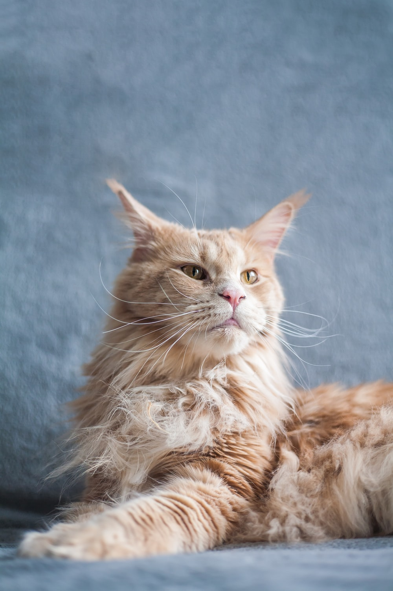

My SuperSnuggly Cat
The Maine Coon is a large domesticated cat breed. It has a distinctive physical appearance and valuable hunting skills. It is one of the oldest natural breeds in North America, specifically native to the US state of Maine,[3] where it is the official state cat. No records of the Maine Coon's exact origins and date of introduction to the United States exist, so several competing hypotheses have been suggested, the most credible suggestion being that it is closely related to the Norwegian Forest cat and the Siberian. The breed was popular in cat shows in the late 19th century, but its existence became threatened when long-haired breeds from overseas were introduced in the early 20th century. The Maine Coon has since made a comeback and is now one of the most popular cat breeds in the United States. The Maine Coon is a large and sociable cat, hence its nickname, "the gentle giant". It is characterised by a prominent ruff along its chest, robust bone structure, rectangular body shape, an uneven two-layered coat with longer guard hairs over a silky satin undercoat, and a long, bushy tail. The breed's colors vary widely, with only lilac and chocolate disallowed for pedigree. Prized for its intelligence and playful, gentle personality, the Maine Coon is often cited as having "dog-like" characteristics.[4][5] Professionals notice certain health problems recurring in the breed, including feline hypertrophic cardiomyopathy and hip dysplasia, but reputable breeders use modern screening methods to minimise the frequency of these problems.